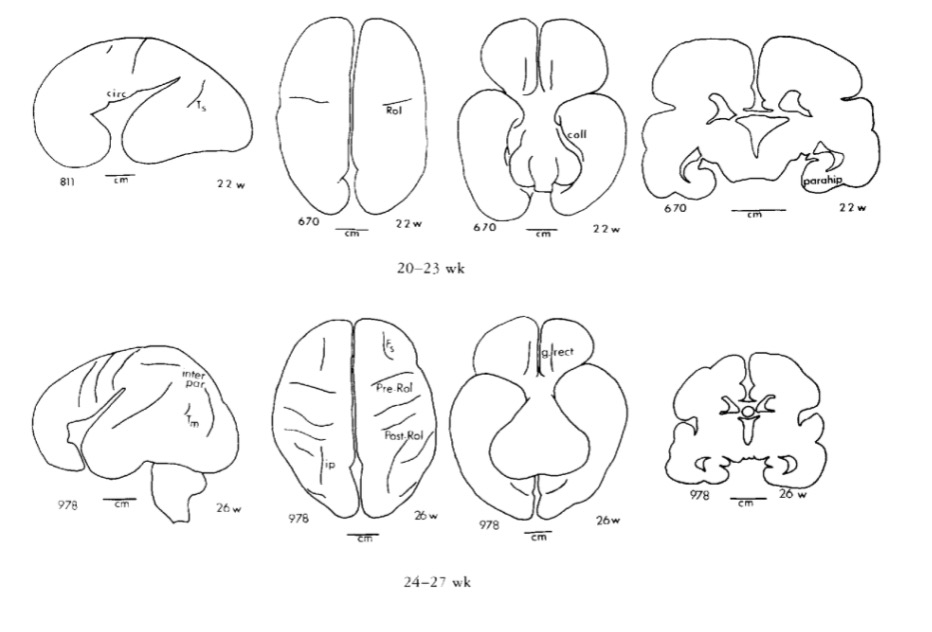

Human brain development
Timeline of milestones

- CNS among earliest-developing, last to finish organ systems
- Prolonged developmental period…makes CNS especially vulnerable
- …makes CNS especially open to external influences
- ~ 86 billion neurons in adult CNS
- similar # of glia
- about 16 (14-32) billion neurons, 80/20% Glu/GABA
- 7-80K synapses/cortical neuron
- 164 trillion synapses in cerebral cortex, DeFelipe, Alonso-Nanclares, & Arellano (2002)
- \(10^{15}\) (quadrillion) synapses in CNS
- 145-175 km (90-109 mi) of myelinated axons, Marner, Nyengaard, Tang, & Pakkenberg (2003)
- brain ~ 2.5% of body mass, but consumes 18% of \(O_2\) at rest, Kety & Schmidt (1948), and has been estimated to consume about 20 W.
- millions of neurons generated per hour
Summaries by phase
Prenatal period
Summary
- ~38 weeks from conception/fertilization on average
- Embryonic period (weeks 1-8), fetal period (weeks 9-)
- Three 12-13 week trimesters
Insemination
- Can occur 3-4 days before or up to 1-2 days after…
- Ovulation
Fertilization
- Within ~ 24 hrs of ovulation
Implantation
- ~ 6 days after fertilization
Early embryogenesis
Formation of neural tube (neurulation)

- Embryonic layers: ectoderm, mesoderm, endoderm
- Neural tube forms ~ 23 pcd (postconceptual days) from dorsal ectoderm
- “Skin-brain” axis (Jameson, Boulton, Silove, Nanan, & Guastella, 2023).

- Neural tube closes in middle, moves toward rostral & caudal ends, closing by 29 - 30 pcd.
- Failures of neural tube closure
- Anencephaly (rostral neuraxis)
- Spina bifida (caudal neuraxis)

- Neural tube becomes
- Ventricles & cerebral aqueduct
- Central canal of spinal cord

- Rostro-caudal patterning via differential growth into vesicles
- Forebrain (prosencephalon)
- Midbrain (mesencephalone)
- Hindbrain (rhomencephalon)
Neurogenesis and gliogenesis
- Neuroepithelium cell layer lines neural tube creating ventricular zone (VZ) and subventricular zone (SVZ)
- Peri-ventricular regions home to pluripotent stem and progenitor cells that produce new neurons & glia
- Neurogenesis (of excitatory Glu neurons) observed by 27 pcd (7 pcw; post-conceptual week)
- complete by 191 pcd (27 pcw), Silbereis et al. (2016)
- Most cortical and striatal neurons generated prenatally, but
- Cerebellum continues to ~ 18 mos

- Areas in adult human brain that generate new neurons
- hippocampus
- striatum
- olfactory bulb (minimally)
- weak evidence for substantial neurogenesis in adult cerebral cortex
- Neural stem cells
- Undergo symmetric & asymmetric cell division
- Generate glia, neurons, and basal progenitor cells
Radial glia and cell migration


Radial unit hypothesis

Axon growth cone
- Chemoattractants
- e.g., Nerve Growth Factor (NGF)
- Chemorepellents
- Receptors in growth cone detect chemical gradients
Glia migrate, too

Differentiation
- Neuron vs. glial cell
- Cell type
- myelin-producing vs. astrocyte vs. microglia
- pyramidal cell vs. stellate vs. Purkinje vs. …
- NTs released
- Where to connect
Differential gene expression in PFC vs. other
Gyral development




Infancy & Early Childhood
Synaptogenesis
- Begins prenatally (~ 18 pcw)
- Peak density ~ 15 mos postnatal
- Spine density in DLPFC ~ 7 yrs postnatal
- 700K synapses/s on average

Proliferation, pruning
- Early proliferation
- Later pruning
- Rates, peaks differ by area
Apoptosis
- Programmed cell death
- 20-80%, varies by area
- Spinal cord >> cortex
- Quantity of nerve growth factors (NGF) influences

Synaptic rearrangement

- Progressive phase: growth rate >> loss rate
- Regressive phase: growth rate << loss rate
Myelination

- Neonatal brain largely unmyelinated
- Gradual myelination, peaks in mid-20s
- Non-uniform pattern
- Spinal cord before brain
- Sensory before motor
Structural/morphometric development

Synaptogenesis
Myelination across human development

Networks in the brain
- Some networks more susceptible to lesioning/injury.

- And develop (across) age with differing profiles:
Our results revealed three distinguishable profiles, whose expression strengthened with increasing age and which characterized developmental differences in connectivity within the ten systems, between networks thought to underlie cognitive control and non-control systems, and among the non-control networks.

“Control” networks

non-“control” networks

The “development” of developmental connectomics

Myelination changes “network” properties

Synaptic rearrangment, myelination change cortical thickness
- Cortical thickness changes (Gogtay et al., 2004)


Video depictions
Right hemisphere
Superior
Inferior
Changes in brain energetics (glucose utilization)

Gene expression across development

Summary of developmental milestones
Prenatal
- Neuro- and gliogenesis
- Migration
- Synaptogenesis begins
- Differentiation
- Apoptosis
- Myelination begins
- Infant gene expression ≠ Adult
Postnatal
- Synaptogenesis
- Cortical expansion, activity-dependent change
- Then cubic, quadratic, or linear declines in cortical thickness
- Myelination
- Connectivity changes (esp within networks)
- Prolonged period of postnatal/pre-reproductive development (Konner, 2011)
How brain development clarifies anatomical structure
3-4 weeks

4 weeks

~4 weeks

6 weeks


Beyond 6+ weeks

Organization of the brain
| Major division | Ventricular Landmark | Embryonic Division | Structure |
|---|---|---|---|
| Forebrain | Lateral | Telencephalon | Cerebral cortex |
| Basal ganglia | |||
| Hippocampus, amygdala | |||
| Third | Diencephalon | Thalamus | |
| Hypothalamus | |||
| Midbrain | Cerebral Aqueduct | Mesencephalon | Tectum, tegmentum |
| Hindbrain | 4th | Metencephalon | Cerebellum, pons |
| – | Mylencephalon | Medulla oblongata |
From structural development to functional development

Different hardware = different computations?
Researchers routinely use motor behaviors (e.g., eye, face, and limb movements) to index cognition in the human neonate.
When developmental researchers use infant movements to index cognition, they often assume that the cortex is involved in producing the behavior.
However, cortical control of movement is absent at birth, emerging gradually over the first several postnatal months and beyond; before cortical outflow emerges, brainstem networks produce complex motor behavior.
Thus, cortical control of the motor behaviors used to infer cognition in neonates is not neurobiologically plausible.
Researchers should be cautious when making claims about developmental continuity between newborn and adult cognition (i.e., ‘core knowledge’) and its supporting neural architecture.